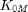

Contents
function [T] = Mho(Z_mho,I,I2,V,Vpol,K0,K0M)
Mho distance characteristic
Computes the mho distance characterist in phase-ground and phase-phase quantities. It can be used in parallel lines
Inputs:
- impedance range - measured current in the protected line - measured current in the parallel line to the protected - measured voltage in protected line - polarization voltage - self zero compensation  - mutual zero compensation
Outputs: - Torque
Assigning inputs
Va=V(:,1); Vb=V(:,2); Vc=V(:,3); Va_res=Vpol(:,1); Vb_res=Vpol(:,2); Vc_res=Vpol(:,3); Ia=I(:,1); Ib=I(:,2); Ic=I(:,3); Ia2=I2(:,1); Ib2=I2(:,2); Ic2=I2(:,3);
Initializing all variables
I0=zeros(length(I(:,1)),1); I02=zeros(length(I(:,1)),1); Vab=zeros(length(I(:,1)),1); Vbc=zeros(length(I(:,1)),1); Vca=zeros(length(I(:,1)),1); Iab=zeros(length(I(:,1)),1); Ibc=zeros(length(I(:,1)),1); Ica=zeros(length(I(:,1)),1); Vab_res=zeros(length(I(:,1)),1); Vbc_res=zeros(length(I(:,1)),1); Vca_res=zeros(length(I(:,1)),1); Ta_op=zeros(length(I(:,1)),1); Tb_op=zeros(length(I(:,1)),1); Tc_op=zeros(length(I(:,1)),1); Tab_op=zeros(length(I(:,1)),1); Tbc_op=zeros(length(I(:,1)),1); Tca_op=zeros(length(I(:,1)),1); Ta_res=zeros(length(I(:,1)),1); Tb_res=zeros(length(I(:,1)),1); Tc_res=zeros(length(I(:,1)),1); Tab_res=zeros(length(I(:,1)),1); Tbc_res=zeros(length(I(:,1)),1); Tca_res=zeros(length(I(:,1)),1); Ta=zeros(length(I(:,1)),1); Tb=zeros(length(I(:,1)),1); Tc=zeros(length(I(:,1)),1); Tab=zeros(length(I(:,1)),1); Tbc=zeros(length(I(:,1)),1); Tca=zeros(length(I(:,1)),1);
Loop through all values
for k = 1:length(I(:,1))
- self-zero sequence current - zero sequence current of the parallel line
I0(k) = (Ia(k)+Ib(k)+Ic(k))/3; I02(k) = (Ia2(k)+Ib2(k)+Ic2(k))/3;
Phase-Phase voltage and current computation
Vab(k)= Va(k)-Vb(k); Vbc(k)= Vb(k)-Vc(k); Vca(k)= Vc(k)-Va(k); Iab(k)= Ia(k)-Ib(k); Ibc(k)= Ib(k)-Ic(k); Ica(k)= Ic(k)-Ia(k);
Phase-Phase voltage restriction computation
Vab_res(k) = Va_res(k)-Vb_res(k); Vbc_res(k) = Vb_res(k)-Vc_res(k); Vca_res(k) = Vc_res(k)-Va_res(k);
Operation torque calculation phase-ground and phase-phase
Ta_op(k) = Ia(k)*Z_mho+I0(k)*K0*Z_mho+I02(k)*K0M*Z_mho-Va(k); Tb_op(k) = Ib(k)*Z_mho+I0(k)*K0*Z_mho+I02(k)*K0M*Z_mho-Vb(k); Tc_op(k) = Ic(k)*Z_mho+I0(k)*K0*Z_mho+I02(k)*K0M*Z_mho-Vc(k); Tab_op(k) = Iab(k)*Z_mho-Vab(k); Tbc_op(k) = Ibc(k)*Z_mho-Vbc(k); Tca_op(k) = Ica(k)*Z_mho-Vca(k);
Restriction torque calculation phase-ground and phase-phase
Ta_res(k) = Va_res(k); Tb_res(k) = Vb_res(k); Tc_res(k) = Vc_res(k); Tab_res(k) = Vab_res(k); Tbc_res(k) = Vbc_res(k); Tca_res(k) = Vca_res(k);
Torque calculation
Ta(k) = Ta_op(k)*conj(Ta_res(k)); Tb(k) = Tb_op(k)*conj(Tb_res(k)); Tc(k) = Tc_op(k)*conj(Tc_res(k)); Tab(k) = Tab_op(k)*conj(Tab_res(k)); Tbc(k) = Tbc_op(k)*conj(Tbc_res(k)); Tca(k) = Tca_op(k)*conj(Tca_res(k));
end
Returning a vector T with all computed torques
T(:,1) = Ta; T(:,2) = Tb; T(:,3) = Tc; T(:,4) = Tab; T(:,5) = Tbc; T(:,6) = Tca;
end